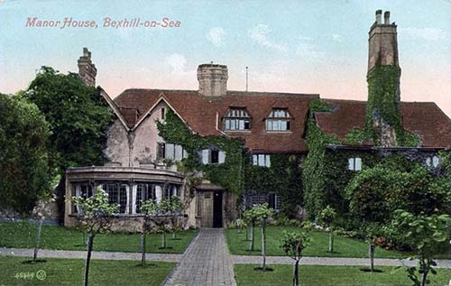
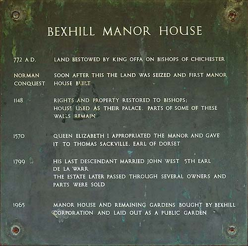

Old Town Manor (1250-1967)
It is thought that the an original building (called Bishops Palace) was damaged by the great storm of 1250 and consequently rebuilt by Richard Wych (13th Bishop of Chichester). We know this as the oldest remains are from this period.In 1447 Adam de Moleyns (31st Bishop of Chichester) was awarded a licence to fortify the building from the invading French.
The Church of Chichester owned the grounds until 1590, when Queen Elizabeth 1 acquired them and passed them to the Lord High Treasurer - Thomas Sackville. The manor then became known as Court Lodge.[13]
Court Lodge became the first home in Bexhill to have a telephone in 1892, after the 8th Earl De La Warr fully renovated and expanded the house. This included transforming a cattle-shed into a ballroom (now known as the Manor Barn) for hosting many aristocratic parties.
The German painter August Neven du Mont and his family lived in the manor in 1903. Followed by Sir Robert Leicester Harmsworth (businessman and politician) in 1912, whose family became became the last residents.

The Manor House, circa 1909.
With no beneficiaries to the estate, Bexhill Corporation (now Rother District Council) tried to sell property in 1963 with no success. This led to the formation of The Bexhill Old Town Preservation Society.Unfortunately this was not enough to stop the demolition of the manor in 1967 to widen De La Warr Road. Although the preservation society did prevent the land from being used for high-rise flats and instead turn it into a public space.
Today the ruins of the former manor house can be explored inside Manor Gardens. Some medieval features can still be seen such as the cobbled stone walls, doorways, windows and a fireplace, although not all are in their original positions.

Plaque displayed inside the Manor.